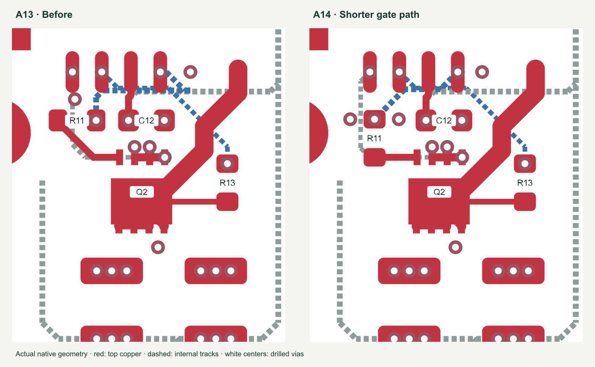

PLANAR STUDIO · A14 · 11 OCTOBER 2026 · FIVE BOARDS
Ready for supplier review.
Full turnkey remains open.
The native CAD and data screens pass. This is an unbuilt engineering prototype.
JLCPCB has not accepted the complete manufacturing job or ferrite installation. The hardware has not established a 60 W operating rating. No order, reservation, supplier message or file upload was made.
Board and layer viewer · Detailed manufacturing review · Validation record · Unsent supplier-review draft
75top-side placements
73 SMT + 2 insertion headers
43 / 43exact electronic codes with public stock for five fitted boards
35% shorterlower rectifier gate routing
9.698 → 6.289 mm
Changes made
R11 now faces Q2 with a straight output connection. Its input route and dedicated VSS sense pickup are rerouted around the relocated via. The last 0.16 mm control trace is widened to 0.20 mm. The feedback placement, 64 × 56 mm outline, 55 × 47 mm M3 pattern, top-only assembly and transformer winding artwork are retained.

All routes use horizontal, vertical or 45° segments, with no unanchored 90° elbows. All 50 stitching vias touch at least two same-net filled planes. Nineteen named pours retain the separate ground domains, switching-node projection exclusions and connector thermals. The 198 routed vias plus six T1 transitions make 204 holes specified for resin fill and copper cap; the four connector and four mount holes stay open.
JLCPCB job definition
Standard PCBA, five completed boards, top-side assembly, green solder mask, ENIG. Submit the matched single-board Gerbers, BOM and CPL below. The candidate JLC081622-1080 stack is 1.655 mm nominal with 70 µm outer and 61 µm inner copper. Preserve that magnetic construction pending factory review.
JLC Standard publishes a 70 × 70 mm minimum handling size and requires edge rails and fiducials. JLC must provide the handling arrangement for this smaller board. No customer panel, tabs or mouse-bite files are supplied. Confirm final depanelized delivery and the overhanging-header fixture.
Proposed stencil thickness is 0.125 mm, following the GaN package example. Every supplied aperture passes the area-ratio screen; minimum 0.7405 versus a 0.66 transfer guideline. This does not approve paste volume, profile or yield. Have JLC review actual package models and hidden-joint inspection before release.
Required closure before full turnkey release
- Standard PCBA publishes a 70 x 70 mm minimum handling size, edge rails and fiducials. This 64 x 56 mm board needs JLC-defined handling rails/panel. Customer data remain single-board.
- Exact 8-layer 2 oz construction, minimum delivered copper, laminate and thickness tolerance need order-specific acceptance.
- Approve factory part-model rotations/pin 1 for all 75 placements and hidden-joint inspection/stencil process.
- No factory acceptance for procurement and post-solder installation of two ferrite halves and two clips per board. Global sourcing acceptance alone is not assembly acceptance.
- Ten mating plugs need an agreed accessory fitting/delivery operation. Library stock is for assembly and does not guarantee loose accessory delivery.
- JLC BOM tool redirects to sign-in in this session. Actual assembly MOQ/attrition, stock allocation and full build quote are not obtained.
- Physical core/clip fit and electrical bring-up remain open; the converter has not been built or qualified at 60 W.
Five-board planning cost
$400–650 total ($80–130 per board). The refreshed calculated allowance is $392.47–$601.22. It includes electronics assembly plus separate cores, clips and plugs; it excludes ferrite fitting, functional testing, shipping, tax, duties and unquoted special-process overruns. This is not a JLC quotation or an accepted price for finished converters.
The public catalog was refreshed at 2026-10-11T18:47:52.059606+00:00. F1 has 28 units and L2 has 39, against five fitted units each. Order-specific MOQ/attrition and warehouse allocation still need confirmation. The JLC BOM tool requires sign-in in this session.
Verified CAD and data checks
| Check | Result | Criterion / limit |
|---|
| All purchased placements on top | PASS | 75 top-side placements |
| Mixed assembly identity | PASS | 73 SMT components and J1/J2 insertion headers; Standard PCBA |
| Copper layers | PASS | 8, requiring Standard PCBA |
| Routed width margin | PASS | 0.20 mm design minimum; JLC 2 oz published minimum 0.16 mm |
| 2 oz connector annuli | PASS | At least 0.254 mm nominal ring for insertion PTH |
| hole_gap_under_0p2_mm | PASS | No findings in the native geometry screen |
| different_component_copper_overlaps | PASS | No findings in the native geometry screen |
| courtyard_does_not_enclose_copper_pads | PASS | No findings in the native geometry screen |
| foreign_mask_gaps_under_0p2_mm | PASS | No findings in the native geometry screen |
| internal_via_hole_clearance_under_0p2_mm | PASS | No findings in the native geometry screen |
| silkscreen_below_1mm_height_or_0p15mm_stroke | PASS | No findings in the native geometry screen |
| Mask opening to foreign trace | PASS | JLC minimum 0.09 mm |
| Stencil area-ratio screen | PASS | At 0.125 mm stencil, area/(wall perimeter x thickness) >= 0.66; supplier still approves transfer |
| BOM/CPL reference bijection | PASS | Exactly one CPL entry per fitted BOM reference; exact MPN/C-code preserved |
| Five-board fitted-stock screen | PASS | Public exact-code stock covers fitted quantity; order-specific attrition/MOQ and allocation remain unknown |
| Pours and drill treatment | PASS | No disconnected filled islands or connector thermal bypasses; separate drill-treatment map |
Full measurements and explicit holds · Electrical rating screens and qualification work
Exact files for review
Use this set together. CPL rotations are raw KiCad angles; approve the supplier-model overlay using the numbered pad map. T1, test pads, mounting holes and fiducials are fabrication features, not additional purchased SMT placements.
Download file manifest
Process sequence to agree
Fabricate and electrically test the bare board; print and inspect paste; place and reflow the top SMT components; inspect visible and hidden joints; insert and solder J1/J2; inspect and depanelize; dry-fit and install the specified core halves/clips; fit or supply the agreed mating plugs. Complete physical fit and engineering bring-up before defining supplier powered acceptance testing.
Fit two B66285G0050X187 core halves, two B66286A2000X000 clips and two WJ2EDGK-5.08-02P-14-00A mating plugs per board. Do not add a spacer, grind a core, or substitute parts without engineering review. Purchasing acceptance alone does not establish ferrite fitting or loose-accessory delivery.
Official guidance checked
stencil transfer · fabrication · copper · assembly · sourcing · inventory · MOQ attrition